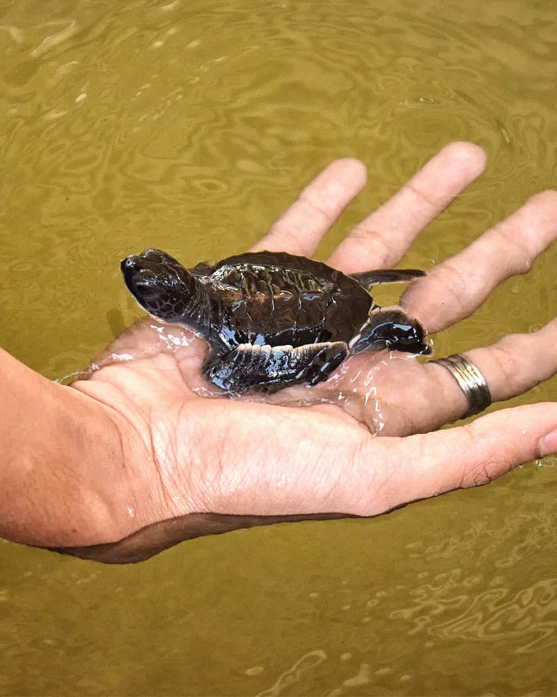
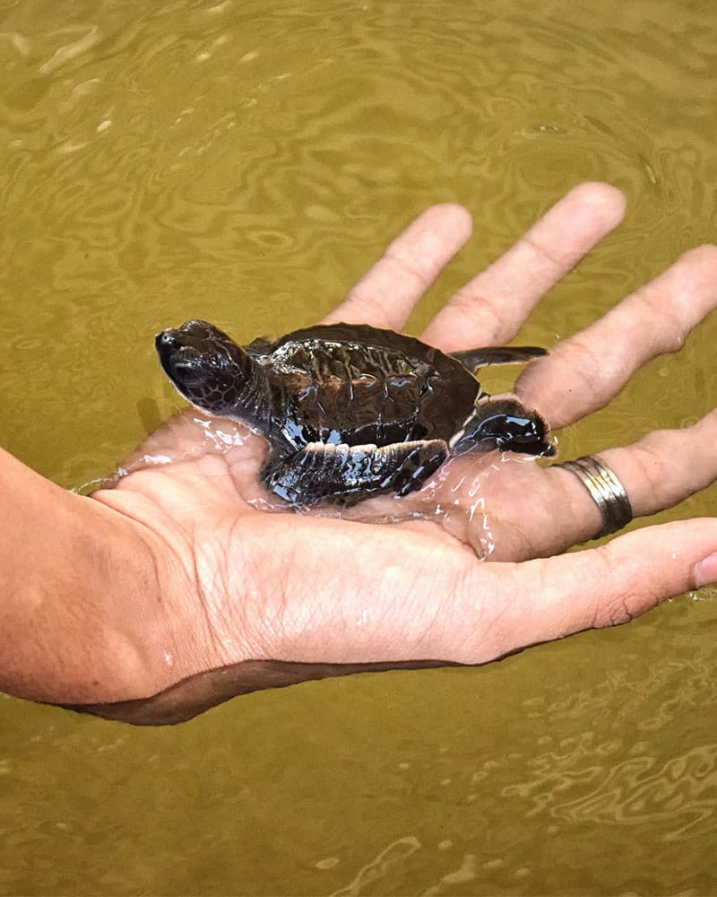
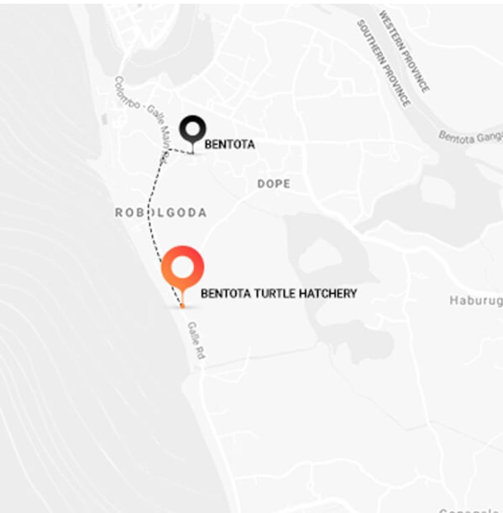

The Bentota Turtle Hatchery Project is a popular attraction in Bentota for all travellers. The pristine golden shores that draws you to our island, also provides an enticing nesting ground for several endangered turtle species from the Olive Ridley to the Leatherback turtle. The project aims at conserving and protecting the eggs from predators and other dangers. Visit the turtle hatchery in Bentota to learn about these endangered graceful creatures of the sea
Location: 10 to 15 minutes tuk tuk ride south from Bentota
Highlights: You should visit the Kasgoda Turtle Hatchery where you can spend an interesting time watching the baby turtles grow.
Things to keep in mind: Avoid disturbing the nesting turtles with light.
Price: Approximate price starts from 500 LKR.
 

The Turtle Hatchery protects the eggs until they hatch and are ready to swim back home. The project also rescues turtles that are injured while at sea, due to fishing nets, motors and more. They are often rehabilitated before being released back.A visit to the turtle hatchery is a must for nature lovers.
